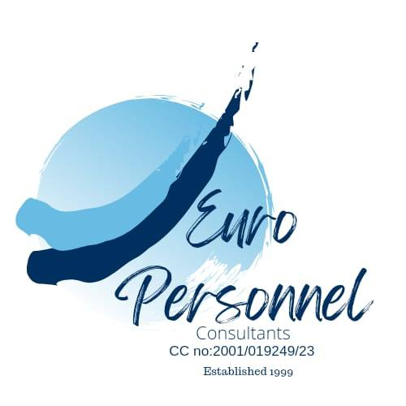

Established 1999 · Pretoria, South Africa
H-2A agricultural recruitment you can trust
Euro Personnel Consultants is South Africa's oldest and most trusted H-2A recruitment consultancy. For over 27 years we have placed more than 5 000 agricultural workers with employers in the United States and Ireland — with integrity, personal screening, and a 98% annual return rate.
- 5 000+Workers placed
- 98%Annual return rate
- 27 yrsExperience
Services
We specialise in recruiting, preparing, and processing South African H-2A workers for U.S. agricultural employers through a fully managed, integrity-driven recruitment and consular process.
-
Recruitment & matching
We work closely with employers to understand job specifications, policies, and physical requirements, then search our internal database or advertise vacancies when needed. Every candidate undergoes a personal interview before being introduced to employers.
-
Visa preparation & DS-160
Once employers confirm their selections, we handle visa application forms, quality control, DS-160 completion, visa fee payment, and appointment scheduling — so workers only need to submit their completed forms.
-
Consulate processing support
From worker list submission to WhatsApp group updates, we coordinate the full consulate process. We keep employers and workers informed at every stage through dedicated groups, direct messaging, and email.
Who we help
Whether you are an employer, a worker, or an agent partner, we deliver the same honest, hands-on service we have built our reputation on since 1999.
-
U.S. & Irish agricultural employers
We match you with screened, suitable candidates and manage the recruitment and visa process end to end. We ideally need one to two months' head start for smooth preparation, and all visa applications must be submitted before 20 December each season.
-
South African agricultural workers
If you meet employer requirements, we guide you through personal screening, interviews, and visa preparation. Open positions are posted on our Facebook page and TikTok @europersonnel when available.
-
Agent partners
We hold an exclusive contract with one of the largest H-2A agents in the United States and provide the same reliable, exceptional support to all our valued agent partners across 27 years of trusted relationships.
-
Our approach
We do things the old-school way — no shortcuts, no sugar-coating. We tell it like it is, and our results speak for themselves. Founded by Magda van der Westhuizen; now led by her daughter Charlotte Portwig, continuing a legacy of loyalty, honesty, and excellence.
How it works
Our recruitment process is designed to efficiently match employers with suitable candidates. Here is what to expect from first contact through to consulate processing.
Recruitment
-
Employer requirements
We confirm job specifications, smoking or alcohol policies, physical requirements, skills, experience, and any additional criteria.
-
Candidate search
We search our internal database first. If no suitable candidates are available, we advertise on Facebook and TikTok.
-
Personal screening
All applicants undergo a personal interview to ensure they meet the employer's requirements as closely as possible.
-
Resume submission & interviews
Selected resumes are forwarded to the employer for review, shortlisting, and interviews via WhatsApp or Zoom.
-
Employment offer & visa process
Once the employer confirms selections, the offer email triggers visa preparation. We respect employer discretion when they prefer to receive all resumes and make their own selections.
Consulate processing
-
Worker list submission
Employers provide a complete worker list with full names, contact numbers, and email addresses so we can begin visa preparation immediately.
-
Application forms & WhatsApp group
We contact each worker directly with the appropriate form and add all selected workers to a dedicated WhatsApp group for updates and guidance.
-
DS-160 completion
Once we receive the ETA-790 and I-797B, we finalise prepared DS-160 applications, handle quality control, visa fee payment, and schedule appointments.
-
Ongoing communication
We maintain transparent communication throughout — informing unsuccessful candidates, confirming final worker lists, and keeping all parties updated at each stage.
Shop
Item one
Hidden — this business does not sell products.
Photos

Book
Hidden on Entry package.
Contact
Ready to discuss recruitment or visa processing? Reach out to Charlotte Portwig and the Euro Personnel team.
Get in touch
Office
815 Boabab Street
Doornpoort
Pretoria 0017
Reg. no. 2001/019249/23